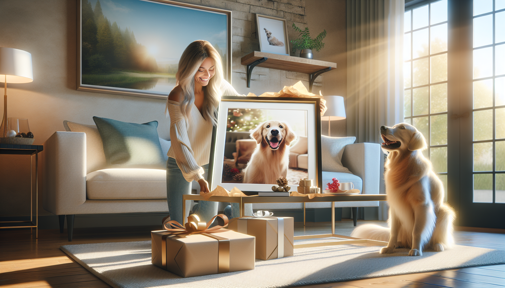

If you have ever shopped for a devoted pet owner, you know one thing is always true: generic gifts rarely feel special enough. Pet lovers adore presents that celebrate the animals who bring joy, comfort, and personality into their lives every day. That is exactly why custom pet portraits have become such a thoughtful and unforgettable gift idea.
Whether you are buying for a dog mom, cat dad, new puppy owner, or someone honoring the memory of a beloved companion, a personalized pet portrait transforms a favorite photo into meaningful art. It is personal, emotional, stylish, and guaranteed to stand out from the usual gift options. More than just decor, it becomes a treasured keepsake that captures the bond between a person and their pet.
In this article, we will explore why custom pet portraits make perfect gifts, when to give them, and what makes them so special for pet owners of all kinds.
The best gifts show that you truly know the person receiving them. A custom pet portrait instantly does that. Instead of choosing something generic off a shelf, you are giving a one-of-a-kind piece created specifically for their beloved pet.
Every pet has its own expression, quirks, and charm. A portrait captures those details in a way that feels intimate and meaningful. From floppy ears and soulful eyes to a playful grin or signature pose, personalized artwork reflects the personality that pet owners know and love best.
This level of personalization is what makes the gift so memorable. It says, “I know how much your pet means to you, and I wanted to honor that.” For many pet parents, that thoughtfulness means everything.
Pets are family. For many people, dogs and cats are not just companions; they are daily sources of comfort, laughter, and unconditional love. That is why gifts centered around pets often carry so much emotional value.
A custom pet portrait honors that relationship in a beautiful, lasting way. It is a reminder of muddy paw prints by the door, exciting walks, quiet cuddles on the couch, and all the little routines that make life with a pet so meaningful. Every time the recipient sees the portrait on their wall, desk, or shelf, they are reminded of those moments.
Unlike gifts that are quickly used up or forgotten, personalized pet art continues to spark joy every day. It becomes part of the home and part of the story they tell about the pet they love.
That emotional connection is what turns a simple present into something unforgettable.
One reason custom pet portraits are such a popular gift is their versatility. They work beautifully for nearly any occasion, whether you are celebrating a happy milestone or offering comfort during a difficult time.
Here are just a few occasions when a custom pet portrait makes an especially thoughtful gift:
If you are ever stuck wondering what to buy for someone who already seems to have everything, personalized pet artwork is a smart choice. It feels creative, heartfelt, and suitable for almost any celebration.
One of the reasons people love custom pet portraits is that they are both emotional and practical. Yes, they are meaningful gifts, but they are also beautiful pieces of decor that fit naturally into everyday life.
A well-designed pet portrait can enhance a gallery wall, brighten an office, add personality to a hallway, or become a standout piece in a living room. It gives pet owners a stylish way to showcase the animals they adore while also complementing their home aesthetic.
Some people prefer playful and colorful pet illustrations, while others love elegant, classic, or modern portrait styles. No matter the design, the result is art with personal significance. That combination is hard to beat.
Unlike novelty gifts that may end up tucked away in a drawer, a custom pet portrait is meant to be displayed and enjoyed. It becomes a conversation starter when guests visit and a source of pride for the recipient.
Custom pet portraits are not only wonderful for celebrating pets who are currently part of the family; they are also incredibly meaningful memorial gifts. Losing a pet is heartbreaking, and many pet owners appreciate having a beautiful tribute that keeps their companion’s memory close.
A portrait can preserve the face, expression, and presence of a beloved dog or cat in a way that photos alone sometimes cannot. It offers comfort, remembrance, and a lasting reminder of the love they shared.
For someone grieving the loss of a pet, a custom portrait can be one of the most compassionate gifts you can give. It acknowledges that the bond mattered deeply and deserves to be remembered.
At the same time, portraits of current pets are just as powerful. They celebrate the here and now, capturing a cherished stage in the pet’s life before time moves on. In both cases, the gift holds emotional weight that lasts far beyond the moment it is opened.
Many gift shoppers want to find something that feels premium and impressive, but still personal. Custom pet portraits strike that balance perfectly. They feel elevated, artistic, and carefully chosen, yet they never come across as cold or generic.
There is something special about gifting custom artwork. It suggests intention and quality. It feels more thoughtful than a standard store-bought item because it is made specifically for the recipient. Even better, custom pet portraits can suit a range of budgets, making them accessible while still feeling high-end.
For pet owners, receiving a portrait of their furry friend often feels like receiving a luxury keepsake. It is beautiful enough to display proudly, but personal enough to create an immediate emotional reaction.
That makes it ideal for gift shoppers who want to give something that feels both polished and heartfelt.
Let’s be honest: a lot of gifts blur together. Candles, mugs, socks, gift cards, and last-minute novelty items may be useful, but they rarely leave a lasting impression. A custom pet portrait is different. It surprises people. It delights them. And it usually becomes one of the most talked-about gifts they receive.
That is especially true for dog lovers and pet owners who genuinely light up whenever someone acknowledges their furry family member. Giving them custom pet art shows creativity and thought in a way that generic products simply cannot.
It also has excellent gift-opening impact. The second they recognize their pet in the artwork, there is often an immediate emotional response, whether that is laughter, happy tears, or pure excitement. Those are the moments that make gift giving feel truly rewarding.
If your goal is to give something memorable, heartfelt, and different from the usual, personalized pet portraits are a clear winner.
Custom pet portraits are more than trendy gifts. They are meaningful expressions of love, memory, and connection. They celebrate pets as family members, turn favorite photos into lasting art, and offer a level of personalization that makes recipients feel truly seen.
For birthdays, holidays, memorials, or everyday surprises, custom pet portraits check every box. They are personal, stylish, emotional, and unforgettable. Most importantly, they honor the incredible bond between people and the pets who make life brighter.
If you are searching for a gift that will stand out and be cherished for years to come, a custom pet portrait is a beautiful choice.
Ready to find the perfect personalized gift for a pet lover? Shop personalized pet products at SnoutAndAbout on Etsy.